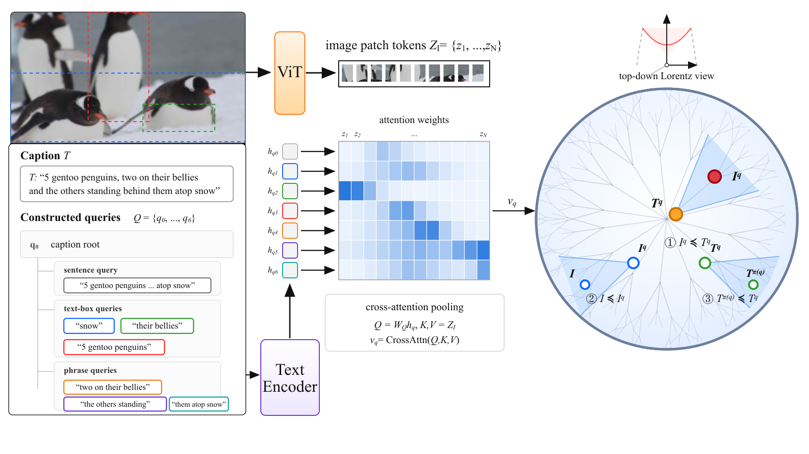

1 Iq ≼ Tq
Query alignment
The visual node lies inside the entailment cone of its query text.
ECCV 2026 · Beyond Euclidean Workshop · Oral
A hyperbolic CLIP that learns from every part of the caption.
CLIP-like vision-language models learn strong global image-text representations, but a single pooled image vector can average away relational structure such as part-whole and parent-child relations.
Hyper3-CLIP builds a lightweight hierarchy from each caption: the full caption, sentence fragments, localized descriptions, and extracted phrases. Each query pools a query-specific visual representation, and the resulting text and visual nodes are trained together in hyperbolic space.
At inference time, the extra pooling path disappears. Hyper3-CLIP runs as a plain CLIP dual encoder.
Each textual query attends to its matching image patches and becomes its own node.

The visual node lies inside the entailment cone of its query text.
The full scene remains more specific than the concept selected by a query.
Parent links organize caption, sentence, localized text, and phrase nodes.
Hyper3-CLIP uses extra machinery during training and omits it during inference.
Text query ─┐
├─ cross-attention over image patches
Image ViT ──┘ ↓
query-specific node
↓
hierarchy lossesThe model builds queries from captions, sentences, localized descriptions, and phrases. Each query attends to image patches that match its meaning. This process produces visual nodes and teaches the shared encoders about parts, context, and hierarchy.
Image → image encoder → one global embedding ─┐
├─ similarity score
Text → text encoder → one global embedding ─┘Inference requires no caption decomposition, query hierarchy, per-query cross-attention, or hierarchy-loss computation. A deployed model bypasses the training branch and may exclude it.
The training signal remains in the trained model. The hierarchy losses changed the shared encoder and projection weights. It is like using scaffolding while constructing a building: builders remove the scaffold, but the building retains the structure created with its support.
A node is the represented entity within a hierarchy or graph. It has an embedding, plus an identity and relationships to other nodes.
For Hyper3-CLIP, a query produces:
Analogy: a node is a city; its embedding is the city’s location on a map.
Similarity asks whether two embeddings are close. An entailment cone asks another question: which embedding represents the more specific meaning?
Each node b defines a cone containing the embeddings permitted to be more specific than b. For the relation a ≼ b, the more specific node a should lie inside the cone rooted at b. If a falls outside that cone, the training objective applies a penalty.
A useful analogy is a flashlight beam. The node at the flashlight is the broader concept, and the beam marks the region where valid specializations can appear. Two nodes may be close, but their relationship respects the hierarchy only when the more specific node lies inside the broader node’s beam.
For Hyper3-CLIP, the three relations mean:
Here, “parent” describes how the query was constructed; it does not always mean “more general.” Entailment cones encourage a geometric ordering, but they do not constitute a logical proof that one statement entails another.
Explore model embeddings and their geometry on this page. In the Poincaré disk, more specific concepts appear near the boundary, while more general concepts appear near the center. Compare this hierarchy with CLIP’s embedding space under spherical and unbounded Euclidean projections.
The demo is hosted on Hugging Face Spaces and may take a moment to wake. View the Space page.
Zero-shot evaluation with a ViT-B/16 backbone. Compared with OpenAI CLIP using the same backbone, Hyper3-CLIP improves all eight displayed COCO/Flickr R@5 and R@10 retrieval scores. Its zero-shot multi-label mAP rises from 68.55 to 78.20 on VOC and from 44.89 to 54.28 on COCO.
Zero-shot retrieval
| Retrieval | CLIP | UNCHA | Hyper3-CLIP | Δ vs UNCHA |
|---|---|---|---|---|
| COCO text | 71.4 / 81.5 | 72.7 / 82.7 | 75.7 / 84.3 | +3.0 / +1.6 |
| Flickr text | 93.6 / 96.9 | 91.4 / 95.9 | 95.4 / 97.6 | +4.0 / +1.7 |
| COCO image | 57.4 / 68.5 | 60.0 / 71.0 | 63.0 / 73.2 | +3.0 / +2.2 |
| Flickr image | 83.5 / 89.9 | 84.9 / 91.2 | 86.4 / 91.4 | +1.5 / +0.2 |
Zero-shot multi-label
Hyper3-CLIP leads the compared hyperbolic vision-language models (MERU, HyCoCLIP, UNCHA, and PHyCLIP) on both datasets.
Zero-shot classification
Mean per-class accuracy under the stated prompt protocol.
Caption-hierarchy ablation
Full training improves caption-hierarchy AP by 3.64 points over the no-query baseline.
@article{mahmood2026hyper3clip,
title = {Hyper3-CLIP: Hierarchy-Conditioned Hyperbolic
Vision-Language Training},
author = {Mahmood, Matin and Rueda-Toicen, Antonio and
ElBassat, Mohamed and Elkerdany, Seifeldin and
Wang, Weixing and de Melo, Gerard},
journal = {arXiv preprint arXiv:2608.29313},
year = {2026},
note = {ECCV 2026 Beyond Euclidean Workshop},
url = {https://arxiv.org/abs/2608.29313}
}